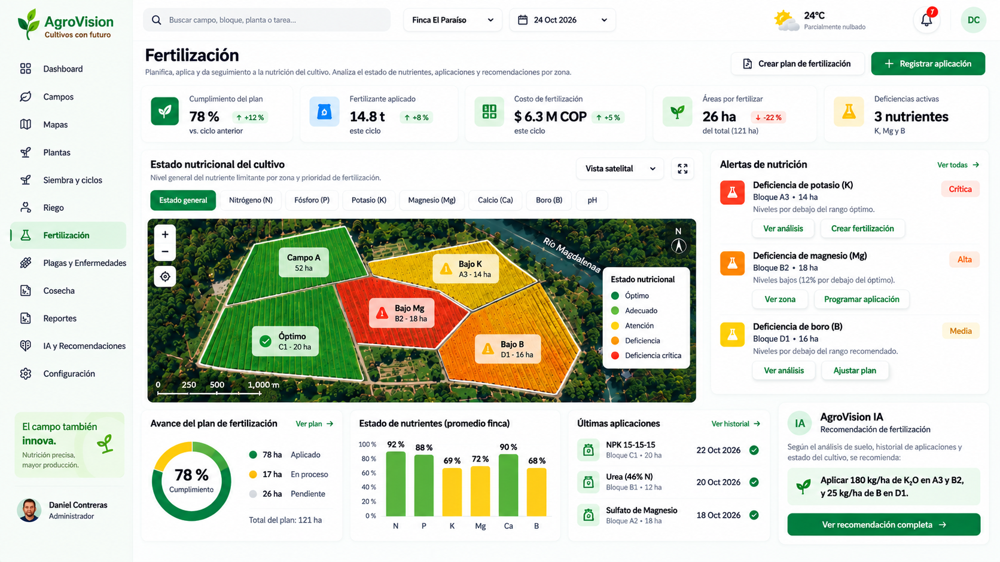
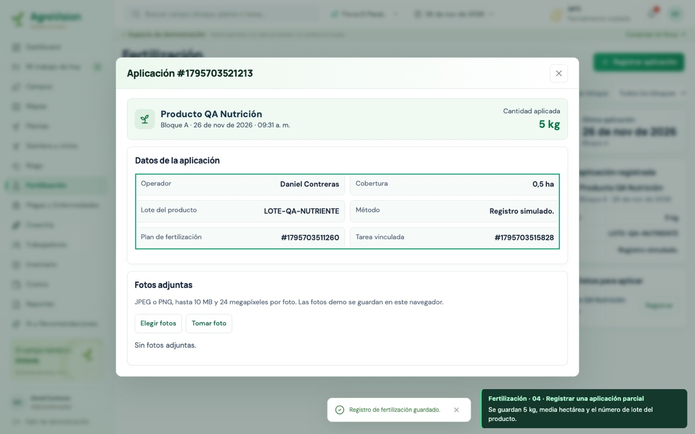
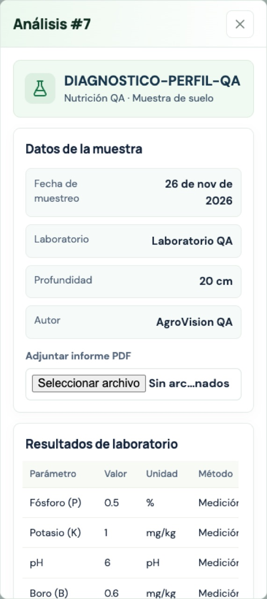

Última revisión 26 de noviembre de 2026.
Requerimientos funcionales
| ID | Requerimiento | Estado actual |
|---|---|---|
| FERT-01 | Registrar muestreo de suelo o foliar por bloque con procedencia, fecha, profundidad, resultados, unidades, método e informe PDF opcional. | Implementado. La revisión técnica se puede actualizar. La corrección de datos requiere un nuevo análisis. |
| FERT-02 | Interpretar resultados con el perfil compatible de la finca, mostrar la trazabilidad de la muestra y priorizar la revisión por bloque. | Implementado. La validación de compatibilidad por método y el ciclo de edición y desactivación de perfiles están pendientes. |
| FERT-03 | Preparar un plan con diagnóstico, referencia analítica, contexto sanitario opcional, dosis técnica, cobertura, producto, responsable y fechas. | Implementado para planes únicos y recurrentes. Los productos se pueden crear y consultar. Faltan edición y desactivación de productos. |
| FERT-04 | Aprobar o anular con justificación, controlar la versión y generar una tarea por ocurrencia sin duplicados. | Implementado. Los planes recurrentes aprobados generan las tareas al aprobarse. Falta una operación que reprograme o anule ocurrencias futuras preservando el historial. |
| FERT-05 | Registrar aplicaciones parciales con evento, lote, cantidad, cobertura, método y fotos. | Implementado. Valida el saldo por ocurrencia y descuenta del lote la cantidad utilizada. Registra el gasto en el bloque de la aplicación. |
| FERT-06 | Registrar seguimiento técnico, comparar lo programado con lo aplicado y consultar mapas e historial. | Implementado. Pendientes los avisos externos y la comparación foliar. |
Funcionalidades y pantallas disponibles
De la muestra al mapa de ejecución
En Fertilización → Nuevo análisis, selecciona el bloque y el tipo de muestra. Registra laboratorio, fecha, referencia, profundidad y cada valor medido con su método. Marca el punto sobre el contorno disponible, toma la ubicación del dispositivo o escribe latitud y longitud.
Guardar y adjuntar fotos comprueba que haya ubicación y abre el análisis. En Fotos adjuntas puedes elegir imágenes o usar la cámara. La ubicación y las fotos se guardan vinculadas al análisis. Guardar sigue disponible para dejar registros sin evidencia y completarlos después.
En Planes → Nuevo plan, relaciona la muestra, define dosis, área o plantas, método, fecha y responsable inicial. Un plan único requiere Aprobar y luego Generar tarea. Un plan recurrente genera una tarea por ocurrencia al aprobarlo.
En Ver plan → Tareas y distribución del trabajo consulta fecha, responsable, estado y cantidad aplicada y pendiente. Administradores y supervisores pueden reasignar individualmente las tareas pendientes a miembros de la finca. Cada persona encuentra sus asignaciones en Mi trabajo de hoy.
Registrar aplicación relaciona la ejecución con la tarea. Indica fecha, cantidad, cobertura, método y lote. Después de guardar se abre el detalle con Fotos adjuntas. El plan permite volver a abrir cada aplicación con Ver aplicación y fotos.
Ver plan → Mapa de ejecución del plan muestra el bloque objetivo y separa cobertura programada, registrada y pendiente de la cantidad de producto. Puedes filtrar por ocurrencia. En Resumen → Mapa de ejecución de la finca puedes seleccionar cada bloque, abrir sus planes y consultar los conteos por campo.
El mapa colorea el bloque por su estado. Para un bloque parcial muestra cuántas hectáreas o plantas se registraron y cuántas faltan según la meta del plan. Cuando hay varias pasadas, la suma de las coberturas declaradas puede contar dos veces una zona superpuesta. El perímetro exacto tratado dentro del bloque queda pendiente de captura.
Pantallazos y grabaciones de la muestra, las tareas y los mapas Pruebas de Fertilización en Chrome
La sección Fertilización conserva el historial anterior y reúne cuatro vistas:
Resumen: abre con indicadores, mapa nutricional, alertas por bloque, avance del plan y aplicaciones recientes. El mapa toma la última muestra de suelo registrada por bloque. Cambiar de nutriente actualiza el estado del mapa y las alertas. Se puede abrir la muestra desde el mapa, las alertas o el panel de revisión técnica.
Análisis: muestras de suelo o foliares con bloque, fecha, laboratorio, referencia, profundidad, coordenadas opcionales y resultados N, P, K, pH, materia orgánica, Ca, Mg, S, B y Zn. Cada resultado conserva su unidad y método. Los parámetros no medidos permanecen vacíos. Se puede adjuntar un informe PDF de hasta 10 MB; la descarga exige acceso a la finca.
Planes: diagnóstico técnico, objetivo, etapa, análisis de referencia, inspección sanitaria opcional del mismo bloque, producto y composición, dosis, cobertura, método, fecha/hora, responsable y fecha de seguimiento. Pueden seleccionar un producto del catálogo, validar su unidad estándar y programar una aplicación única, semanal, quincenal o mensual hasta dos años. ADMIN/SUPERVISOR registran y aprueban con justificación y control de versión. La decisión identifica a quien aprobó; no certifica las credenciales profesionales de quien ejecutará la aplicación. No hay edición general de análisis o planes; la revisión técnica de un análisis sí se puede actualizar. Para corregir datos se registra otro análisis o plan. Un plan único puede anularse antes de generar su tarea. Al aprobar un plan recurrente se generan sus ocurrencias y tareas de inmediato; después no se anula para preservar su trazabilidad.
Aplicaciones: desde un plan aprobado con tarea, el responsable asignado o un administrador/supervisor de la finca registra cantidades parciales, fecha real, lote de inventario, cobertura, método y notas. El lote debe tener el mismo nombre de producto del plan, unidad compatible, saldo suficiente y costo unitario en COP. La salida y el gasto se guardan con la aplicación. En planes recurrentes se selecciona la ocurrencia concreta; cada ocurrencia conserva su propia cantidad aplicada. La aplicación crea un evento agrícola; después se pueden adjuntar fotos JPEG/PNG con el módulo existente. En cada ocurrencia, la suma no puede superar la cantidad aprobada para esa aplicación. La cobertura de cada aplicación describe una pasada. El mapa agrega las cantidades declaradas, con un aviso cuando hay varias pasadas en la selección. Una aplicación inicia la tarea. El cierre requiere enviarla a revisión y aprobar el trabajo.
El filtro de bloque actualiza los registros y los indicadores en todo el módulo. En Resumen, el cumplimiento expresa la proporción de planes aprobados que alcanzaron la cantidad prevista. El área pendiente corresponde a los bloques con saldo, que se cuentan una sola vez. El gráfico de nutrientes muestra qué proporción de las muestras con rango compatible está dentro de ese rango. El costo de las aplicaciones queda disponible en Costos para administradores.
Análisis resume cuántos resultados quedan dentro o fuera del rango de referencia. Planes muestra el avance de la cantidad aplicada frente a la prevista. Aplicaciones resume cantidades por unidad, bloques atendidos y el último registro. Desde esta vista se puede registrar otra aplicación cuando el plan tiene tarea, saldo pendiente y el usuario dispone de permisos. En pantallas pequeñas los registros se muestran en tarjetas con acceso al detalle y a la evidencia.
Endpoints
La API directa de fertilización usa la base /api/v1/fertilization y exige sesión, pertenencia a la finca y los permisos correspondientes:
| Método | Ruta | Uso |
|---|---|---|
GET | /fertilization?farmId={id} | Consulta análisis, planes, aplicaciones y seguimientos de una finca. |
POST | /fertilization/analyses | Crea un análisis de suelo o foliar con resultados de nutrientes. |
POST | /fertilization/analyses/{id}/review | Registra o actualiza la revisión técnica de un análisis. |
POST | /fertilization/analyses/{id}/report | Adjunta el informe de laboratorio en PDF. |
GET | /fertilization/analyses/{id}/report | Descarga el informe de laboratorio. |
POST | /fertilization/plans | Crea un plan vinculado a un análisis. |
POST | /fertilization/plans/{id}/approve | Aprueba un plan con justificación. |
POST | /fertilization/plans/{id}/cancel | Anula un plan con justificación. |
POST | /fertilization/plans/{id}/task | Genera la tarea o las ocurrencias de campo del plan aprobado. |
POST | /fertilization/plans/{id}/applications | Registra una aplicación real, incluso parcial. |
POST | /fertilization/plans/{id}/followups | Registra el seguimiento técnico y un análisis posterior opcional. |
GET | /fertilization/profiles?farmId={id} | Consulta los perfiles de referencia activos de la finca. |
POST | /fertilization/profiles | Crea un perfil por cultivo, variedad, tipo de muestra y rangos de nutrientes. Requiere rol agronómico. |
GET | /fertilization/products?farmId={id} | Consulta el catálogo activo de productos fertilizantes de la finca. |
POST | /fertilization/products | Crea un producto con código, composición y unidad estándar. Requiere rol agronómico. |
Un plan puede incluir productId, recurrence (NONE, WEEKLY, BIWEEKLY o MONTHLY) y recurrenceUntil. Al aprobar un plan recurrente se crean todas sus ocurrencias en fertilization_plan_task; repetir POST /plans/{id}/task es idempotente. Una aplicación recurrente debe enviar el taskId de su ocurrencia.
Endpoints de apoyo:
| Método | Ruta | Uso en nutrición |
|---|---|---|
GET | /api/v1/analytics/map?farmId={id} | Devuelve por bloque la última muestra de suelo disponible y sus resultados. |
GET | /api/v1/analytics/dashboard?farmId={id} | Incluye cantidades acumuladas de aplicaciones fertilizantes y sus unidades. |
GET | /api/v1/tasks?farmId={id} | Lista las tareas generadas desde planes aprobados. |
PATCH | /api/v1/tasks/{id} | Actualiza el avance, bloqueo, envío a revisión o finalización de la tarea. |
POST | /api/v1/photos | Adjunta fotos de evidencia al evento creado por una aplicación. |
GET | /api/v1/photos?eventId={id} | Lista la evidencia de una aplicación. |
GET | /api/v1/photos/{id}/content | Consulta o descarga una foto de evidencia. |
Pantallas
En modo real, estas pantallas consumen los endpoints anteriores; en modo demo, los datos de fertilización se conservan localmente en el navegador:


Fertilización (
#/fertilization) abre en Resumen. Historial anterior abre los eventos de fertilización registrados antes del flujo estructurado.Resumen: capas por nutriente, alertas y porcentaje de planes completados. Crear plan de fertilización abre el formulario. Desde una alerta, el mismo formulario se abre con el bloque y el análisis seleccionados. Registrar aplicación abre el registro para un plan disponible o permite seleccionar uno cuando hay varios.
Análisis: captura N, P, K, pH, materia orgánica, Ca, Mg, S, B y Zn; muestra unidades, métodos, laboratorio, muestra, informe e interpretación preliminar; permite abrir el detalle y descargar o adjuntar el PDF.
Planes: crea, consulta, aprueba, anula y convierte planes aprobados en tareas; muestra diagnóstico, dosis, cobertura, aplicación acumulada, catálogo de productos y frecuencia de aplicación.
Aplicaciones: registra cantidad, fecha, cobertura, método, lote y notas; selecciona la ocurrencia de un plan recurrente, muestra el detalle y permite adjuntar fotos de evidencia.
Perfiles y catálogo son paneles de apoyo en el modo conectado. ADMIN, SUPERVISOR y AGRONOMIST pueden crear perfiles activos por finca, cultivo, variedad y muestra, y registrar una decisión técnica confirmada, pendiente de seguimiento o rechazada desde el detalle del análisis. También pueden registrar productos con composición y unidad estándar.



Mapas → Nutrientes (
#/maps) muestra rangos observados entre muestras comparables, área de los bloques con esas muestras y una comparativa por bloque. La trazabilidad conserva fecha, referencia, unidad, método, laboratorio e interpretación preliminar. En demo se pueden comparar humedad y nutrientes en un mapa dividido. En modo conectado se muestran ambos resúmenes y leyendas junto al plano de la capa activa.Dashboard → Nutrientes (
#/dashboard): capa resumida de nutrientes en el mapa principal. Abrir mapa completo lleva a la vista de Mapas.Mi trabajo de hoy (
#/tasks): muestra las tareas de fertilización generadas desde planes aprobados y permite avanzar, bloquear, enviar a revisión o completar la ejecución según el rol.Reportes y actividad (
#/reports): consulta el evento agrícola creado por una aplicación y su historial general.
La interpretación que aparece en Análisis y Mapas requiere revisión técnica para confirmar deficiencias y decidir recomendaciones, dosis o prescripciones.
Cálculos y revisión
Solo se convierte la dosis elegida por el técnico a cantidad total: kg/ha × ha, L/ha × ha, g/planta × plantas ÷ 1000 o mL/planta × plantas ÷ 1000. En Análisis y Mapas, el API selecciona el perfil activo de la finca por cultivo, variedad opcional y tipo de muestra. Después busca rangos por nutriente y unidad. La compatibilidad del método de laboratorio requiere revisión técnica. En demo se usa un perfil ilustrativo de suelo para banano y plátano. La composición se transcribe como texto de etiqueta; no se estima absorción. El técnico debe comprobarla con el informe y el contexto del cultivo.
Generar tareas es idempotente: repetir la solicitud no duplica la tarea de una aplicación única ni las ocurrencias de un plan recurrente. En un plan recurrente, el total mostrado después de generar tareas es la suma de las cantidades previstas por ocurrencia, mientras cada aplicación se valida contra su propia tarea. Las tareas bloqueadas, en revisión o terminadas no admiten más aplicaciones. El plan muestra programado/aplicado con unidades separadas, vencimiento de revisión y seguimientos con autor, fecha, conclusión y nuevo análisis opcional. Los filtros son por bloque; el CSV exporta planes sin mezclar kg con L.
El mapa utiliza la última muestra de suelo registrada por bloque, ordenada por fecha e ID; no exige que incluya todos los nutrientes. Las muestras foliares no sustituyen al suelo. Si la muestra más reciente no midió un nutriente, se muestra «Sin dato» en vez de recuperar silenciosamente un valor antiguo. Se muestran unidades, método, laboratorio, referencia y fecha, y no se promedian muestras históricas.
Análisis y Mapas → Nutrientes muestran «Sin interpretar» cuando el servidor no encuentra un perfil o rango compatible con la muestra. El API permite listar y crear perfiles y productos. Para cambiar un perfil se puede crear otro. El API prioriza los más específicos y luego los de mayor ID. Los colores del mapa representan la distribución de valores medidos en muestras comparables.
Los registros antiguos de monitoreo permanecen conservados, pero al no tener suficiente trazabilidad analítica no se convierten en muestras certificadas.
Relación con la cartilla local
Referencia revisada: cartilla-platano-ICA-final-BAJA.pdf, sobre manejo fitosanitario del plátano, no una tabla universal de fertilización de banano. Las páginas PDF 8–9 integran fertilización, riego y drenaje al manejo preventivo; las páginas 29–30 mencionan fertilización adecuada en el manejo de sigatoka; la página 35 relaciona picudos secundarios con desequilibrios nutricionales (incluidos K y B); la página 39 advierte que algunos síntomas radicales pueden parecer deficiencias nutricionales y requieren diagnóstico de laboratorio. Esto motiva conservar contexto sanitario y revisión técnica, no inferir deficiencias ni recomendar dosis o tratamientos a partir de una plaga. Las asociaciones se documentan, no se presentan como causalidad demostrada.
Operación y límites
Flyway aplica las migraciones V9, V10, V19, V21, V30 y V31 al reiniciar el backend. Los registros, PDF e imágenes se guardan en PostgreSQL; deben incluirse en sus copias de seguridad. Los perfiles de referencia ya son configurables por finca, cultivo, variedad y tipo de muestra; su contenido debe ser validado por el responsable técnico. Quedan pendientes la integración con laboratorios, el análisis foliar comparativo y las correlaciones causales con rendimiento o sanidad. Las existencias y el costo unitario de cada lote se gestionan en Inventario. Todavía no hay validación específica por método de laboratorio, niveles de confianza ni recomendaciones automáticas de fertilización. La fecha de seguimiento se muestra en el módulo, no envía notificaciones externas. Los permisos se verifican en cada endpoint; archivos PDF se entregan como descarga, no se ejecutan ni se muestran embebidos. No hay escáner antivirus integrado.
En modo demo, muestras con datos distintos para cada nutriente, planes, aplicaciones e informes se conservan localmente. Los PDF comparten el límite de almacenamiento del navegador; un error de cuota se comunica sin afirmar guardado. Las fotos usan IndexedDB. «Restablecer demostración» elimina estos cambios.
Persistencia JPA y verificación
El servicio de fertilización ejecuta consultas nativas mediante EntityManager. Los bloqueos y las transacciones protegen la aprobación, la generación de tareas y el registro de aplicaciones parciales. Cada aplicación conserva el vínculo entre plan, ocurrencia, evento y evidencia. Persistencia JPA
API aislada en H2 con
./gradlew test --tests '*FertilizationApiTest'.Integración con el PostGIS configurado con
./gradlew test --tests '*FertilizationPostgresTest'.Navegador desde
frontendconnpx playwright test tests/fertilization.spec.ts.
El recorrido QA del 25 de noviembre de 2026 verificó análisis, plan, aprobación, tarea, aplicación y seguimiento contra la API conectada a PostGIS. Informe del recorrido conectado del 25 de noviembre a las 14:07
Funcionalidades probadas y resultados
Recorrido conectado de Fertilización
Desde la raíz del repositorio, este comando abre Chrome visible, prueba solo Fertilización y deja 15 segundos para revisar cada paso. Inicia una finca de QA en PostGIS temporal y guarda el informe, el video y las capturas en frontend/playwright-report/qa-modulos-*.
scripts/qa-modulos/fertilizacion.sh --postgis --pause-ms 15000 --action-ms 700El guion automatizado prepara la finca por API y abre directamente Fertilización. El recorrido conserva la muestra de suelo con GPS y foto, el plan, la aplicación parcial de 4 kg con su foto, el seguimiento y el mapa de ejecución del plan. Abre Mi trabajo de hoy únicamente para ejecutar y revisar las tareas de Fertilización. Las comprobaciones de las salidas y los gastos asociados usan la API.
| Comprobación | Alcance |
|---|---|
| Operario reasignado | Ve su tarea, aplica los 10 kg de su ocurrencia y envía el trabajo a revisión. Se confirma que otro operario recibe un rechazo y que el costo de la aplicación se reserva a los roles autorizados. |
| Cierre de ambas recurrencias | Las dos tareas llegan a completadas y el plan conserva 20 de 20 kg tras recargar. Las tres aplicaciones generan gastos por 5.000 COP y dejan 6 kg en el lote. |
| Mapa por campo y bloque | Cuatro bloques de prueba muestran los estados cubierto, parcial, pendiente y sin plan. Se revisan leyenda, contadores, selección y los planes de cada bloque. |
| Calendario mensual | El período empieza el 31 de enero e incluye febrero y marzo. Se comprueban las fechas generadas, el límite y el reintento de generación de tareas. |
| Guardados simultáneos | Dos aplicaciones compiten por las existencias. El reintento de la ganadora recupera el mismo evento, salida y gasto. |
| Recuperación de evidencia | Los reintentos de la foto y el PDF conservan el mismo análisis y sus coordenadas, notas y resultados. |
El 26 de noviembre de 2026 se aprobaron los 20 pasos en Chrome visible con pausas de 15 segundos. La prueba duró 7 minutos y 17 segundos. También aprobó la comprobación independiente del perfil móvil con PostGIS. Video y 20 capturas · Informe de Chrome visible · Informe móvil
Recorrido de Fertilización en demostración
Desde la raíz del repositorio, abre Chrome y deja 15 segundos para leer cada paso. El recorrido utiliza la aplicación actual con datos de demostración.
scripts/qa-modulos/fertilizacion.sh --pause-ms 15000 --action-ms 700El recorrido automatizado muestra el mapa de potasio, crea el plan desde una alerta, exige aprobación y tarea, y registra una aplicación de 5 kg con su foto. Después guarda el seguimiento, comprueba que 21 kg exceden los 20 kg de saldo, registra los 20 kg restantes y verifica que el plan ya no permite aplicar. También registra una muestra foliar, rechaza un archivo con firma inválida y compara los bytes del informe descargado tras recargar. La recarga conserva el saldo, el seguimiento y la foto. Informe, pantallazos y video del recorrido ampliado
Los perfiles personalizados y la revisión persistida del diagnóstico usan una finca conectada. El seguimiento del plan que muestra el recorrido es una revisión posterior a la aplicación.
Revalidación del 26 de noviembre de 2026
| Pruebas | Comprobaciones nuevas | Resultado |
|---|---|---|
| Recorrido grabado | Once pasos con los casos de aprobación, saldo, seguimiento, muestra foliar, informe y foto descritos arriba. | 1 aprobada. Pantallazos y video |
| Suite de Fertilización en Chrome | Anular un borrador, conservar el motivo y excluir otro bloque al exportar los planes. Incluye los casos anteriores de análisis, aplicación, mapa y permisos. | 8 ejecuciones aprobadas en escritorio y móvil con demo o API simulada. Informe |
| Caso conectado en Chrome | Aprobar y abrir dos ocurrencias semanales sin recargar, conservar saldos separados, excluir el lote vencido, descontar 4 kg, generar una salida y un gasto de 1.000 COP. Recuperar el seguimiento con un análisis posterior vinculado. | 2 ejecuciones aprobadas contra PostGIS temporal, en escritorio y móvil. Informe |
| API de Fertilización | Incluye los nombres de campos de fechas, tareas y seguimientos que consume el navegador, además de permisos, lotes, idempotencia y reversión. | 8 aprobadas con H2. Informe |
Cobertura conectada adicional
Las pruebas siguientes usan la interfaz de Chrome y una finca temporal en PostGIS. Pasaron las 6 ejecuciones nuevas y las 16 de la suite de Fertilización en conjunto, con escritorio y móvil. Informe de Playwright · Pantallazos
| Prueba | Qué verifica |
|---|---|
| Diagnóstico y revisión técnica | Rechazar rangos invertidos. Aplicar el perfil específico de la variedad aunque exista un perfil general más reciente. Distinguir alto, bajo, en rango y sin interpretar por unidad incompatible. Guardar una revisión, recuperar su decisión y notas y actualizarla de seguimiento a confirmada. |
| Catálogo y unidad de dosis | Crear un producto con unidad estándar L/ha. Verificar que la API rechaza kg/ha. Guardar el plan con la unidad correcta y recuperar el nombre y la composición del catálogo y la cantidad calculada tras recargar. |
| Informe foliar | Rechazar un archivo con firma inválida. Crear la muestra foliar de 0 cm con su resultado y método, cargar el PDF por la API y descargar el mismo contenido tras recargar. |
El recorrido conectado ampliado comprueba la recuperación tras un fallo al cargar el informe y el cierre de dos ocurrencias con cargos separados en PostGIS.


Resultados históricos
| Prueba automatizada | Funcionalidades verificadas | Resultado del 25 de noviembre de 2026 |
|---|---|---|
| Recorrido original de Fertilización | Consultar potasio y alertas por bloque. Crear el plan desde la alerta con muestra y lote precargados. Aprobar y generar tarea. Registrar 5 kg, 0,5 ha y lote de producto. Adjuntar la foto y comprobar cantidades y producto en el resumen. | 1 aprobada en la revalidación, con datos de demostración. Informe por módulo |
| Suite de Fertilización en Chrome | Guardar B y el método de laboratorio. Convertir g/planta a kg. Exigir aprobación y tarea. Persistir aplicación parcial, foto y seguimiento tras recargar. Consultar unidad, método y referencia de B, verificar la unidad de Ca y distinguir N, P y B en el mapa. En modo conectado con API simulada, registrar una muestra como trabajador con CSRF y sin consultar miembros. | 6 aprobadas, 3 en escritorio y 3 en móvil. Informe de Chrome |
| Pruebas unitarias de dominio | Clasificar resultados compatibles y dejar pendientes los no interpretables. Resumir atención y revisión técnica sin generar dosis. | 2 casos de nutrición aprobados en la suite de 11. Salida de unitarias |
| API de Fertilización en H2 | Validar finca, permisos, bloque, coordenadas, fechas y unidades. Crear un perfil, interpretar y revisar una muestra con autorización. Aprobar con versión, generar la tarea sin duplicados y guardar aplicaciones parciales válidas con evento y saldo. Rechazar estados o cantidades inválidas. Descargar el PDF autenticado y validar seguimientos. Elegir la última muestra de suelo. Convertir las cuatro unidades de dosis, conservar la auditoría de anulación y comprobar el catálogo, la generación recurrente y el saldo por ocurrencia. | 7 aprobadas. Informe de Gradle |
| Integración con PostGIS | Persistir muestra, plan aprobado, tarea sin duplicados y aplicación parcial vinculada a su evento. Recuperar la última muestra de suelo y listar las aplicaciones de la finca. | 1 aprobada. Informe de Gradle |
| Recorrido conectado de la finca QA | Pasos 10–15, desde el muestreo y el plan hasta el seguimiento de una aplicación de 5 kg. | Aprobado el 25 de noviembre a las 14:07 y el 26 de noviembre. La revalidación del 25 a las 15:51 se detuvo al comprobar el surco. Historial y resultado de la revalidación |